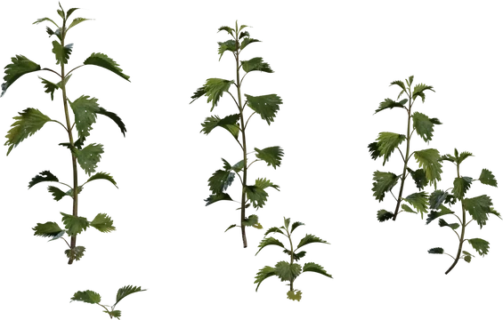

11 / Forest & ground cover
Nettle Plant
Small groups in shaded forest rough, away from the walking line.
Serrated leaves and visible veins add close-up botanical detail.
Keep sparse and outside maintained turf; use as wild foliage, not a hazard mechanic.